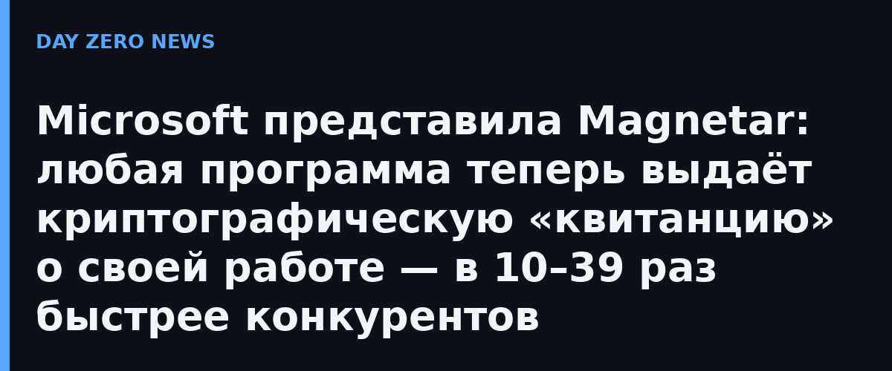

Каждый результат, выданный компьютером, неявно предполагает вопрос: а точно ли программа отработала как заявлено? Сегодня на него отвечают доверием — к оператору, вендору, контрагенту — плюс контрактами, аудитами и логами. Magnetar меняет саму логику: программа выполняется и вместе с результатом возвращает короткое zero-knowledge доказательство — криптографический сертификат того, что именно эта программа на этих входных данных выдала именно этот результат. Проверка занимает около 12 миллисекунд, перезапуск не нужен, а сами входные данные остаются скрытыми.
Zero-knowledge доказательства придумали в 1980-х, но в массовое применение их не пускали три беды: доказательство раньше стоило миллионы раз дороже самого вычисления; разработчикам приходилось вручную переписывать программу под криптографическую схему — месяцы работы, и сама переписка была источником дыр; наконец, самые быстрые системы опирались на эллиптические кривые, которые ломает квантовый компьютер, либо на новые малоизученные функции. Magnetar — первая система доказательств общего назначения, закрывающая все три проблемы сразу: она доказывает исполнение RISC-V, а значит подойдёт любая программа на Rust, Go или C, скомпилированная как обычно. Безопасность держится только на стандартных хеш-функциях — без эллиптических кривых, решёток, доверенной начальной настройки и недоказанных гипотез. Это постквантовая стойкость «по умолчанию».
По данным Microsoft Research, на обычном ноутбуке Magnetar доказывает от 7,2 до 8,7 миллиона процессорных инструкций в секунду, а в среднем по 15 тестовым задачам в 10–39 раз быстрее самых быстрых сопоставимых систем. Доказательства можно дробить и склеивать, так что проверке поддаётся и долгоживущая система — например, реестр транзакций или блокчейн. В анонсе это названо очередным итогом более чем десятилетней работы лаборатории; автор публикации — Сринат Сетти, один из авторов современных верифицируемых виртуальных машин.
Самый говорящий сценарий из анонса: ИИ-агент, действующий от чьего-то имени, сможет прикладывать к каждому своему действию доказательство, что то соответствовало выданной ему политике. Регулируемым финансам это даёт подтверждение корректности обработки транзакций без раскрытия самих транзакций. А после историй про агентов, которые сливали логи, ключи и чужие сессии, это буквально недостающий слой: вместо доверия «чёрному ящику» — проверяемая квитанция на каждый шаг. Здесь пересеклись сразу три темы канала: криптография, верифицируемость ИИ-агентов и инфраструктурная безопасность.
Microsoft честно позиционирует Magnetar как крупный прогресс, а не готовый облачный сервис: это исследовательская система с опубликованным дизайном и замерами, путь до продуктов ещё предстоит. Направление zero-knowledge в России тоже не пустое — например, платформа «Секрет», созданная Сбербанком и НИУ ВШЭ, строит транзакции с подтверждением через доказательства с нулевым разглашением, — но она про финреестры, а не про произвольный код. Сам сдвиг заметен: zero-knowledge перестают быть нишевым инструментом блокчейн-стартапов и становятся штатной функцией вычислений.